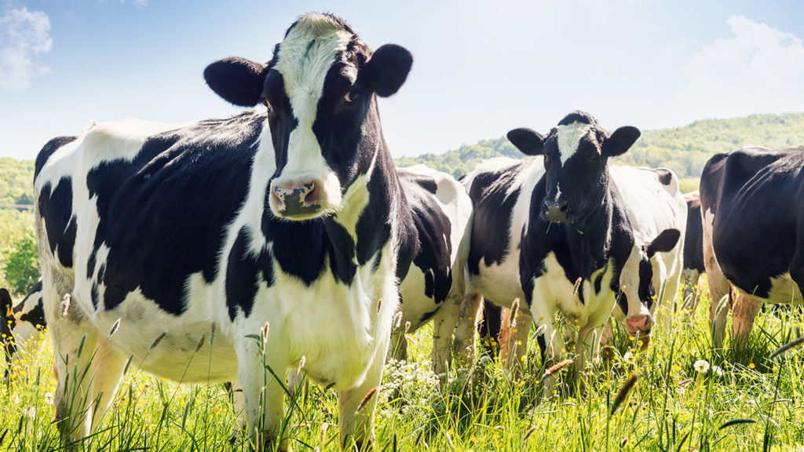
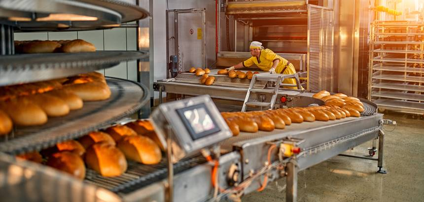

agro 5.0

Você já ouviu falar em agro 5.0? A revolução que promete conectar a cadeia produtiva do Agro de ponta a ponta pode estar mais perto do que você imagina.
Entenda o que esse termo realmente significa, suas principais tendências e como ficar antenado para garantir que o futuro do agro chegue, primeiro, na sua propriedade.
Ferrari
A agropecuária envolve atividades agrícolas e pecuárias, ou seja, cultivação de vegetais e criação de animais. Tais atividades estão relacionadas, principalmente, ao fornecimento de matérias-primas diversas.
Porsche
A Porsche é uma fabricante alemã de carros esportivos de luxo fundada em 1931. Conhecida por seu design inconfundível e engenharia de precisão, a Porsche combina desempenho com conforto no dia a dia.
O modelo 911 é seu carro mais icônico, mas a marca também produz o Taycan (elétrico), o Cayenne (SUV) e o Panamera (sedã esportivo).
McLaren
A McLaren é uma fabricante britânica de carros esportivos que começou como uma equipe de Fórmula 1. Fundada por Bruce McLaren em 1963, a marca passou a produzir carros de rua em 1992 com o lendário F1.
Atualmente, a McLaren produz modelos como o 720S, Artura (híbrido) e o impressionante Speedtail.